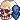
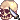

Adema, Keleldur, Vahn, Arioch, Malll - Cueva
21:33 Vahn [Esterno Cueva] cammina sotto la pioggia battente, quasi tiepida, lungo il malmesso acciottolato che porta dalle mura cittadine alla Cueva. Procede senza fretta, il cappuccio del mantello blu notte calato sul capo, e le braccia che stringono una sacca a tracolla di pelle di daino sotto il mantello blu notte, per proteggerla dall'acqua. Stivali neri, semplici da viaggio. La punta di una lama sottile che fa capolino ad ogni suo passo.
21:38 Adema [esterno] [la pioggia martella il mantello con cappuccio del Cavaliere, trasformandolo in una corazza di tessuto fradicio. Avanza accanto a Vahn nel selciato fangoso. La lama ondulata di forgia templare preme sul dorso, assicurata con delle cinghie di cuoio. Respira con calma, i capelli fradici gli si incollano sulla fronte] Questo tempo non è buon presagio. [commenta basso mentre continua ad avanzare]
Adema [esterno] [la pioggia martella il mantello con cappuccio del Cavaliere, trasformandolo in una corazza di tessuto fradicio. Avanza accanto a Vahn nel selciato fangoso. La lama ondulata di forgia templare preme sul dorso, assicurata con delle cinghie di cuoio. Respira con calma, i capelli fradici gli si incollano sulla fronte] Questo tempo non è buon presagio. [commenta basso mentre continua ad avanzare]
Adema [esterno] [la pioggia martella il mantello con cappuccio del Cavaliere, trasformandolo in una corazza di tessuto fradicio. Avanza accanto a Vahn nel selciato fangoso. La lama ondulata di forgia templare preme sul dorso, assicurata con delle cinghie di cuoio. Respira con calma, i capelli fradici gli si incollano sulla fronte] Questo tempo non è buon presagio. [commenta basso mentre continua ad avanzare]21:41Malll
Malll 
[Cueva, tavolo] <E’ seduto al tavolo vicino il bancone, il primo subito dopo l’ingresso. Dinnanzi a lui, all’altra estremità la Lama di Sangue.> Allora, Segugio, non cerchiamo rogne. Se non vogliono fare alcun accordo dico io, lasciamo stare e andiam via. <Inspira. Ha una camicia bianca e un gilet scuro. Capelli neri sparsi sulla fronte.> Mi ha chiesto il Dorato, a trattativa conclusa, di richiedere un incontro con il loro massimo esponente, in zona neutrale, il deserto, con il Signore dei Reietti. <Lo aggiorna, mentre sul tavolo oltre la bottiglia di rhum mezza piena e due bicchierini, vi è poggiato in bella mostra il machete del Capitano> Mi auguro di non doverla usare. <Indica l’arma sul tavolo al compagno, con un gesto del mento storcendo appena le labbra.>21:43Keleldur  [keleldur è il chiudifila del Trittico delle meraviglie rimanendo ad un paio di passi dai due mentre sopraggiunge al luogo dell'incontro. E' piuttosto serio ed imbronciato mentre meditabondo scruta i dintorni, come se stesse soppesando l'aria intorno ma niente su cui si posano i suoi occhi sembrano in qualche modo agitarlo o impedirgli di rompere suo esser quieto] Beh..beh Vediamo se qualcuno riesce a rovinarmi una bella giornata [ipotizza più verso se stesso che a qualcuno dei suoi compari. Veste della sua Lorica legionaria,con al centro un giglio rosso sbiadito e logorato da sfregi di battaglie passate, mentre al di sotto un paio di pantaloni scuri ed un paio di stivali a completarne il vestiario. Appesa alla cintola ha la sua Spada molto bastarda, legata ad un laccio e custodita nel fodero bruno. Un guanto copre la mano sinistra, unica buona, poichè al polso destro al posto della mano vi è soltanto una placca metallica. Niente cappuccio o mantelli per lui, solo il tintinnio dell'armatura e la pioggia che scivola sui capelli] Allora vedrai domani che burrasca [dice in tono piuttosto serio, ma che cozza con un sorrisetto che si lascia sfuggire dalle labbra]
[keleldur è il chiudifila del Trittico delle meraviglie rimanendo ad un paio di passi dai due mentre sopraggiunge al luogo dell'incontro. E' piuttosto serio ed imbronciato mentre meditabondo scruta i dintorni, come se stesse soppesando l'aria intorno ma niente su cui si posano i suoi occhi sembrano in qualche modo agitarlo o impedirgli di rompere suo esser quieto] Beh..beh Vediamo se qualcuno riesce a rovinarmi una bella giornata [ipotizza più verso se stesso che a qualcuno dei suoi compari. Veste della sua Lorica legionaria,con al centro un giglio rosso sbiadito e logorato da sfregi di battaglie passate, mentre al di sotto un paio di pantaloni scuri ed un paio di stivali a completarne il vestiario. Appesa alla cintola ha la sua Spada molto bastarda, legata ad un laccio e custodita nel fodero bruno. Un guanto copre la mano sinistra, unica buona, poichè al polso destro al posto della mano vi è soltanto una placca metallica. Niente cappuccio o mantelli per lui, solo il tintinnio dell'armatura e la pioggia che scivola sui capelli] Allora vedrai domani che burrasca [dice in tono piuttosto serio, ma che cozza con un sorrisetto che si lascia sfuggire dalle labbra]
Keleldur [keleldur è il chiudifila del Trittico delle meraviglie rimanendo ad un paio di passi dai due mentre sopraggiunge al luogo dell'incontro. E' piuttosto serio ed imbronciato mentre meditabondo scruta i dintorni, come se stesse soppesando l'aria intorno ma niente su cui si posano i suoi occhi sembrano in qualche modo agitarlo o impedirgli di rompere suo esser quieto] Beh..beh Vediamo se qualcuno riesce a rovinarmi una bella giornata [ipotizza più verso se stesso che a qualcuno dei suoi compari. Veste della sua Lorica legionaria,con al centro un giglio rosso sbiadito e logorato da sfregi di battaglie passate, mentre al di sotto un paio di pantaloni scuri ed un paio di stivali a completarne il vestiario. Appesa alla cintola ha la sua Spada molto bastarda, legata ad un laccio e custodita nel fodero bruno. Un guanto copre la mano sinistra, unica buona, poichè al polso destro al posto della mano vi è soltanto una placca metallica. Niente cappuccio o mantelli per lui, solo il tintinnio dell'armatura e la pioggia che scivola sui capelli] Allora vedrai domani che burrasca [dice in tono piuttosto serio, ma che cozza con un sorrisetto che si lascia sfuggire dalle labbra]21:45Arioch
Arioch 
[Cueva Tavolo ] [rimane immobile, lo sguardo fisso sul liquido ambrato nel bicchiere, che fa ruotare lento tra le dita. I suoi occhi, neri, si alzano solo dopo qualche secondo, incrociando quelli del compagno.] Le rogne ci trovano anche se le evitiamo. Ma va bene, niente colpi di testa… finché loro non li tirano per primi.[Abbassa il bicchiere senza bere. Si sporge appena in avanti, l’ombra dei capelli scuri ricade sul volto scavato. Indossa una tunica nera e al fianco sinistro riposa la spada nera, foderata]21:47 Vahn [Esterno Cueva] [Vahn prosegue verso la Cueva. Accanto alla figura corazzata di Adema l’elfo sembra un filo d’erba che, calpestato dalla pioggia, a fatica si rialza ad ogni passo.]…É la ciurma di Akan che ci piscia in testa. Non gli é andato mai a genio Floranus, a quel vecchio mostro. [sdrammatizza, con parole da scaricatore di porto che cozza con il tono della sua voce cosí tersa e lieve. Ma c’é una crepa di stanchezza e il suo sguardo dardeggia sulla porta ormai vicina della Cueva, piú nervoso del solito.]…eccoci. [dice in un sospiro. Sale i gradini malmessi che precedono l’ingresso e poi si ferma, esitando un attimo. Fa un passo di lato e guarda Adema negli occhi, come a lasciare a lui la scelta se entrar per primo o cedere il passo.]
Vahn [Esterno Cueva] [Vahn prosegue verso la Cueva. Accanto alla figura corazzata di Adema l’elfo sembra un filo d’erba che, calpestato dalla pioggia, a fatica si rialza ad ogni passo.]…É la ciurma di Akan che ci piscia in testa. Non gli é andato mai a genio Floranus, a quel vecchio mostro. [sdrammatizza, con parole da scaricatore di porto che cozza con il tono della sua voce cosí tersa e lieve. Ma c’é una crepa di stanchezza e il suo sguardo dardeggia sulla porta ormai vicina della Cueva, piú nervoso del solito.]…eccoci. [dice in un sospiro. Sale i gradini malmessi che precedono l’ingresso e poi si ferma, esitando un attimo. Fa un passo di lato e guarda Adema negli occhi, come a lasciare a lui la scelta se entrar per primo o cedere il passo.]
Vahn [Esterno Cueva] [Vahn prosegue verso la Cueva. Accanto alla figura corazzata di Adema l’elfo sembra un filo d’erba che, calpestato dalla pioggia, a fatica si rialza ad ogni passo.]…É la ciurma di Akan che ci piscia in testa. Non gli é andato mai a genio Floranus, a quel vecchio mostro. [sdrammatizza, con parole da scaricatore di porto che cozza con il tono della sua voce cosí tersa e lieve. Ma c’é una crepa di stanchezza e il suo sguardo dardeggia sulla porta ormai vicina della Cueva, piú nervoso del solito.]…eccoci. [dice in un sospiro. Sale i gradini malmessi che precedono l’ingresso e poi si ferma, esitando un attimo. Fa un passo di lato e guarda Adema negli occhi, come a lasciare a lui la scelta se entrar per primo o cedere il passo.]21:52Adema [ingresso] [sotto il mantello, l'armatura del guerriero affiora in placche di acciaio brunito, modellate a seguire la muscolatura: nessun vessillo, solo scalanature sobrie che seguono il torace. Sottili scaglie di cuoio coprono le costole e gli spallacci, anche questi anneriti, raccordano il busto alle braccia. Stretti sugli avambracci invece, due bracciali ammaccati e rinforzati di anelli, dove al loro interno si perdono reticoli di vene e vecchie cicatrici che segnano la pelle arsa dal sole, tipica dei ghilesiani. Rimane in silenzio agli interventi dei due compagni, si limita senza indugio a varcare la soglia quando Vahn gli permette l'ingresso e acconsente senza fare pause. La figura dell'omone, due metri di altezza e larghe spalle, si palesa all'interno della sala: gli occhi, due fessure grigie color dell'acciaio, si sollevano da sotto il cappuccio, andando a puntare le presenze che ivi staziano, interlocutori attesi] et necros sit. [dice sommesso, mentre alza le mani per togliere il cappuccio e palesare il suo volto. Un espressione tirata e severa, non per via del momento bensì dannatamente normale. Fa spazio, lasciano che chi lo segue entri a sua volta]
Adema [ingresso] [sotto il mantello, l'armatura del guerriero affiora in placche di acciaio brunito, modellate a seguire la muscolatura: nessun vessillo, solo scalanature sobrie che seguono il torace. Sottili scaglie di cuoio coprono le costole e gli spallacci, anche questi anneriti, raccordano il busto alle braccia. Stretti sugli avambracci invece, due bracciali ammaccati e rinforzati di anelli, dove al loro interno si perdono reticoli di vene e vecchie cicatrici che segnano la pelle arsa dal sole, tipica dei ghilesiani. Rimane in silenzio agli interventi dei due compagni, si limita senza indugio a varcare la soglia quando Vahn gli permette l'ingresso e acconsente senza fare pause. La figura dell'omone, due metri di altezza e larghe spalle, si palesa all'interno della sala: gli occhi, due fessure grigie color dell'acciaio, si sollevano da sotto il cappuccio, andando a puntare le presenze che ivi staziano, interlocutori attesi] et necros sit. [dice sommesso, mentre alza le mani per togliere il cappuccio e palesare il suo volto. Un espressione tirata e severa, non per via del momento bensì dannatamente normale. Fa spazio, lasciano che chi lo segue entri a sua volta]21:54Malll [Cueva, tavolo] Dico io, siamo venuti senza intenzioni strane, e poi sono loro che vogliono parlare con noi. Hai saputo di qualche movimento a Ghileas? Ne sai più di me di bottiglie vuote e polveri? <Storce il naso. La destra afferra il bicchierino e lo fa roteare nella mano come il compare.> Brindiamo? <Lo solleva a mezz’aria, protraendo l’arto in avanti, al centro del tavolo> Ti piace qui? Ha bisogno di un bel lavoretto, prima che cada a pezzi. E’ stata abbandonata per troppo tempo, e per altrettanto tempo queste membra hanno attraversato il mare. Ma questa.. <Spiega ad Arioch, con voce seria e una leggera vibrazione di malinconia> Era come una casa per me. <Sorride, e aspetta che l’altro brinda e faccia cozzare i due bicchierini, prima di bere> Umh <Lo scricchiolare della porta, il saluto di Adema, si volta verso l’ingresso. Il tavolo non è tanto distante, ma ha solo due sedie libere.> Sono arrivati gli ospiti tanto desiderati.. Arrh <Sottovoce, digrignando i denti e stampando un bel sorriso sul viso. Il suo abbronzato per la vita in nave e tipico di chi ha vissuto anche nel deserto.>
Malll [Cueva, tavolo] Dico io, siamo venuti senza intenzioni strane, e poi sono loro che vogliono parlare con noi. Hai saputo di qualche movimento a Ghileas? Ne sai più di me di bottiglie vuote e polveri? <Storce il naso. La destra afferra il bicchierino e lo fa roteare nella mano come il compare.> Brindiamo? <Lo solleva a mezz’aria, protraendo l’arto in avanti, al centro del tavolo> Ti piace qui? Ha bisogno di un bel lavoretto, prima che cada a pezzi. E’ stata abbandonata per troppo tempo, e per altrettanto tempo queste membra hanno attraversato il mare. Ma questa.. <Spiega ad Arioch, con voce seria e una leggera vibrazione di malinconia> Era come una casa per me. <Sorride, e aspetta che l’altro brinda e faccia cozzare i due bicchierini, prima di bere> Umh <Lo scricchiolare della porta, il saluto di Adema, si volta verso l’ingresso. Il tavolo non è tanto distante, ma ha solo due sedie libere.> Sono arrivati gli ospiti tanto desiderati.. Arrh <Sottovoce, digrignando i denti e stampando un bel sorriso sul viso. Il suo abbronzato per la vita in nave e tipico di chi ha vissuto anche nel deserto.>21:59Keleldur [Osserva Vahn leggermente esitante, ed a lui rivolge un sorriso e la sua unica mano buona che si appoggia sulla sua palla per rincuorarlo e infondergli un pò di quel coraggio di cui sembra necessitare. Una leggera spintarella per lui, giusto per dargli modo di precederlo ed infine anche il vermiglio entra all'interno della struttura, chiudendosi alle spalle la porta] Et necros sit signori. Per chi non mi conoscesse: Keleldur Denabian di Ghileas. [un ampio gesto del braccio,aprendolo per annunciarsi] Sono convinto che siate tutti certi e convinti che questa sarà una serata prolifica [getta lo sguardo in avanti, guardando Malll e Arioch, soffermandosi sul loro vestiario. Non dice nulla, ma la mano sinistra si avvinghia al laccio dove è la spada. Un movimento piuttosto lento, come per far intendere di non avere intenzioni bellicose. La spada rimane foderata e presa a metà della sua lunghezza prima di essere gettata in avanti nella sala, facendo rimbalzare l'elsa con un tintinnio che si propaga nella stanza. Probabilmente sarà finita più o meno a metà tra il gruppo entrante e quello già presente. Il gesto per quanto eclatante non è accompagnato da nessun verbo
Keleldur [Osserva Vahn leggermente esitante, ed a lui rivolge un sorriso e la sua unica mano buona che si appoggia sulla sua palla per rincuorarlo e infondergli un pò di quel coraggio di cui sembra necessitare. Una leggera spintarella per lui, giusto per dargli modo di precederlo ed infine anche il vermiglio entra all'interno della struttura, chiudendosi alle spalle la porta] Et necros sit signori. Per chi non mi conoscesse: Keleldur Denabian di Ghileas. [un ampio gesto del braccio,aprendolo per annunciarsi] Sono convinto che siate tutti certi e convinti che questa sarà una serata prolifica [getta lo sguardo in avanti, guardando Malll e Arioch, soffermandosi sul loro vestiario. Non dice nulla, ma la mano sinistra si avvinghia al laccio dove è la spada. Un movimento piuttosto lento, come per far intendere di non avere intenzioni bellicose. La spada rimane foderata e presa a metà della sua lunghezza prima di essere gettata in avanti nella sala, facendo rimbalzare l'elsa con un tintinnio che si propaga nella stanza. Probabilmente sarà finita più o meno a metà tra il gruppo entrante e quello già presente. Il gesto per quanto eclatante non è accompagnato da nessun verbo22:00Arioch [Cueva Tavolo ] [osserva il bicchiere sollevato, ma non lo imita subito. Resta immobile un momento, quasi a valutare le parole dell’altro più che il gesto. Quando infine leva il proprio bicchierino, lo fa con lentezza, in silenzio, e lo fa tintinnare appena contro quello del compagno. Non sorride.]Alla casa, allora. Anche se le case, quando le lasci per troppo tempo, iniziano a sognare di non essere mai esistite. [Beve in un solo sorso, senza cambiare espressione. Poi posa il bicchierino e si pulisce le labbra con il dorso della mano, mentre lo scricchiolio della porta gli ruba lo sguardo. Lo volge di lato, verso Adema] Eccoli. Puntuali come i corvi al primo odore di sangue. [Si sistema meglio sulla sedia, La voce si abbassa a un sussurro duro] Sorridi pure, Capitano. Io li guardo negli occhi. Se mentono, lo saprò. Se hanno sete di guerra, lo sentirò prima ancora che si siedano. [Fa un cenno lento col capo verso il machete sul tavolo, poi torna a fissare la porta.] Vediamo se sono venuti per parlare o per contare quanti siamo.[Poi quando Keleldur si presenta a loro lui lo saluta soltanto con un cenno della mano destra]
Arioch [Cueva Tavolo ] [osserva il bicchiere sollevato, ma non lo imita subito. Resta immobile un momento, quasi a valutare le parole dell’altro più che il gesto. Quando infine leva il proprio bicchierino, lo fa con lentezza, in silenzio, e lo fa tintinnare appena contro quello del compagno. Non sorride.]Alla casa, allora. Anche se le case, quando le lasci per troppo tempo, iniziano a sognare di non essere mai esistite. [Beve in un solo sorso, senza cambiare espressione. Poi posa il bicchierino e si pulisce le labbra con il dorso della mano, mentre lo scricchiolio della porta gli ruba lo sguardo. Lo volge di lato, verso Adema] Eccoli. Puntuali come i corvi al primo odore di sangue. [Si sistema meglio sulla sedia, La voce si abbassa a un sussurro duro] Sorridi pure, Capitano. Io li guardo negli occhi. Se mentono, lo saprò. Se hanno sete di guerra, lo sentirò prima ancora che si siedano. [Fa un cenno lento col capo verso il machete sul tavolo, poi torna a fissare la porta.] Vediamo se sono venuti per parlare o per contare quanti siamo.[Poi quando Keleldur si presenta a loro lui lo saluta soltanto con un cenno della mano destra]22:06Vahn [Ingresso] [quando l’elfo, grazie alla spinta di Keleldur, supera la soglia della Cueva, il suo viso si trasforma nella sua migliore maschera. Un sorriso compare non appena lui butta sulle spalle il cappuccio e guarda verso i due al tavolo. I ferri da marinaio che adornano le orecchie a punta pescano qualche barbaglio dalle tenui fiamme che illuminano il posto. Sul suo viso giovane sembra per il momento scomparso quel nervosismo di poco fa.]…Arioch…Capitan de Vance…ci rivediamo. [muove qualche lento passo verso il loro tavolo, mentre parla. Le sue esili mani giá stanno togliendo dalle spalle quel mantello scuro zuppo d’acqua. Sotto, il bardo non porta armature, ma una camicia leggera di lino, aperta quanto basta per far intravedere un tatuaggio all’altezza della scapola.] …Mi addolora sapere che il nostro primo incontro non sia salpato sotto i migliori venti. [il tono sembra sincero. Il sorriso si allarga quando l’elfo si ferma a qualche passo dai due.]…Abbiamo ascoltato le vostre condizioni e siamo tornati con una proposta in punti. [dice pratico, quasi rassicurante.]…Siamo qui per metterla attorno a un tavolo, ascoltare le vostre considerazioni e curare assieme i dettagli. Con me ci sono Adema Alastor Moore, che giá conoscete, e Keleldur il…[e l’elfo fa un singhiozzo di spavento quando sente dietro di sé la spada di Keleldur rimbalzare al suolo.]..ahah! [di nervi]..Il pandemonio rosso. Io sono Vahn, cantastorie delle Stelle Erranti, come giá sapete. Qui per servirvi, facilitare la conversazione e nella viva speranza di trovare un accordo che soddisfi entrambe le parti. [la parlantina é giá bella sciolta.]…una bottiglia dalla tua riserva, Arioch? [indica il liquido nei bicchieri, con tono leggero e confidenziale]
Vahn [Ingresso] [quando l’elfo, grazie alla spinta di Keleldur, supera la soglia della Cueva, il suo viso si trasforma nella sua migliore maschera. Un sorriso compare non appena lui butta sulle spalle il cappuccio e guarda verso i due al tavolo. I ferri da marinaio che adornano le orecchie a punta pescano qualche barbaglio dalle tenui fiamme che illuminano il posto. Sul suo viso giovane sembra per il momento scomparso quel nervosismo di poco fa.]…Arioch…Capitan de Vance…ci rivediamo. [muove qualche lento passo verso il loro tavolo, mentre parla. Le sue esili mani giá stanno togliendo dalle spalle quel mantello scuro zuppo d’acqua. Sotto, il bardo non porta armature, ma una camicia leggera di lino, aperta quanto basta per far intravedere un tatuaggio all’altezza della scapola.] …Mi addolora sapere che il nostro primo incontro non sia salpato sotto i migliori venti. [il tono sembra sincero. Il sorriso si allarga quando l’elfo si ferma a qualche passo dai due.]…Abbiamo ascoltato le vostre condizioni e siamo tornati con una proposta in punti. [dice pratico, quasi rassicurante.]…Siamo qui per metterla attorno a un tavolo, ascoltare le vostre considerazioni e curare assieme i dettagli. Con me ci sono Adema Alastor Moore, che giá conoscete, e Keleldur il…[e l’elfo fa un singhiozzo di spavento quando sente dietro di sé la spada di Keleldur rimbalzare al suolo.]..ahah! [di nervi]..Il pandemonio rosso. Io sono Vahn, cantastorie delle Stelle Erranti, come giá sapete. Qui per servirvi, facilitare la conversazione e nella viva speranza di trovare un accordo che soddisfi entrambe le parti. [la parlantina é giá bella sciolta.]…una bottiglia dalla tua riserva, Arioch? [indica il liquido nei bicchieri, con tono leggero e confidenziale]22:10Adema [ingresso] [il guerriero avanza senza dire una parola, il mantello gocciolante scivola rigido sulle placche della corazza e il suo dei suoi passi svanisce sotto il brusio smorzato dei pirati. Nessun cenno, la calma che lo precede sembra pesare nella sala come l'attesa di una sentenza. Giunto al tavolo, con lentezza misurata afferra una sedie per lo schienale e la fa graffiare legno contro legno sul pavimento. Solleva il mento e le iridi ferrose si posano sul capitano] Posso? [la domanda esce piatta e fredda, ma senza tono di richiesta, infatti non attende risposta e si siede, davanti a Malll e a fianco di Arioch, rimanendo immobile. Le gocce d'acqua tracciano righe scure sulla corazza brunita e alcune ciocche fradice vanno a infastidire la vista ma lo sguardo non si sposta, rimanendo incollato al volto del capitano. Il rimbombo della spada lanciata da Keleldur sembra un rumore che si perde in lontananza di cui non si cura, come l'introduzione del bardo che arriva sì alle orecchie del fu Blu, ma sebbene le abbia ascoltato non ne da prova]
Adema [ingresso] [il guerriero avanza senza dire una parola, il mantello gocciolante scivola rigido sulle placche della corazza e il suo dei suoi passi svanisce sotto il brusio smorzato dei pirati. Nessun cenno, la calma che lo precede sembra pesare nella sala come l'attesa di una sentenza. Giunto al tavolo, con lentezza misurata afferra una sedie per lo schienale e la fa graffiare legno contro legno sul pavimento. Solleva il mento e le iridi ferrose si posano sul capitano] Posso? [la domanda esce piatta e fredda, ma senza tono di richiesta, infatti non attende risposta e si siede, davanti a Malll e a fianco di Arioch, rimanendo immobile. Le gocce d'acqua tracciano righe scure sulla corazza brunita e alcune ciocche fradice vanno a infastidire la vista ma lo sguardo non si sposta, rimanendo incollato al volto del capitano. Il rimbombo della spada lanciata da Keleldur sembra un rumore che si perde in lontananza di cui non si cura, come l'introduzione del bardo che arriva sì alle orecchie del fu Blu, ma sebbene le abbia ascoltato non ne da prova]22:10 Adema [sala-tavolo] //modifica tag.
22:14Malll [Cueva, tavolo] <Quando il vermiglio si presenta, lui sorriderà, e prontamente gli risponderà.> keleldur Denabian, è un piacere, uomo di Ghileas. <Il sorriso è tutto per il guerriero.> Capitano Malll de Vance, dico io. E finalmente qualcuno che non esiti a dire il proprio nome liberamente. <Serio, annuisce alle sue stesse parole.> Eppure gettate via l’arma e vi siete presentati così… ammantati di acciaio dico io, mica dobbiamo scendere in guerra? <Notando sia l’armatura di Keleldur che di Adema> Potevate, gentil uomini, vestire con stoffe morbide e meno pesanti. Siamo qui per parlare. <Anche se sul tavolo dove siede steso c’è il machete.> Vogliate scusarmi se perlomeno ho portato la mia arma. L’ultima volta non era con me e un vostro uomo.. Che vedo che questa sera non c’è…Assieme alla donna… <Si guarda intorno alludendo alla figura di Khael ed Etain. Interrompe ciò che stava dicendo salutando il bardo.> Stella Errante… <A Vahn, ricambiando il saluto.> Accomodatevi tutti. Ci sono due sedie libere al tavolo. Se manca qualcuna aggiungete. <Ad Adema annuisce, ma siederà comunque. Se lo ritrova di fronte, vicino Arioch.> Or dunque. Siam qui per ascoltare. Carte scoperte. Nessun baro, dico io. Oggi potreste aver trovato Amici o Nemici nuovi… Ed è solo vostra la scelta arrh
Malll [Cueva, tavolo] <Quando il vermiglio si presenta, lui sorriderà, e prontamente gli risponderà.> keleldur Denabian, è un piacere, uomo di Ghileas. <Il sorriso è tutto per il guerriero.> Capitano Malll de Vance, dico io. E finalmente qualcuno che non esiti a dire il proprio nome liberamente. <Serio, annuisce alle sue stesse parole.> Eppure gettate via l’arma e vi siete presentati così… ammantati di acciaio dico io, mica dobbiamo scendere in guerra? <Notando sia l’armatura di Keleldur che di Adema> Potevate, gentil uomini, vestire con stoffe morbide e meno pesanti. Siamo qui per parlare. <Anche se sul tavolo dove siede steso c’è il machete.> Vogliate scusarmi se perlomeno ho portato la mia arma. L’ultima volta non era con me e un vostro uomo.. Che vedo che questa sera non c’è…Assieme alla donna… <Si guarda intorno alludendo alla figura di Khael ed Etain. Interrompe ciò che stava dicendo salutando il bardo.> Stella Errante… <A Vahn, ricambiando il saluto.> Accomodatevi tutti. Ci sono due sedie libere al tavolo. Se manca qualcuna aggiungete. <Ad Adema annuisce, ma siederà comunque. Se lo ritrova di fronte, vicino Arioch.> Or dunque. Siam qui per ascoltare. Carte scoperte. Nessun baro, dico io. Oggi potreste aver trovato Amici o Nemici nuovi… Ed è solo vostra la scelta arrh22:23Keleldur dopo il suo gesto eclatante il Vermiglio si sofferma su Malll con lo sguardo, intrattenendosi con lui in uno sguardo più prolongato] Non ho motivo alcuno di nascondere il mio nome. Non è di certo per farvi affronto che ho gettato l'arma, tutt'altro [accompagnando un leggero inchino del capo come segno di rispetto al capitano] Quest'armatura è rappresentativa di ciò che è la città di Ghileas, il Pandemonio nero dei combattenti senza Re che furono. Mi rammarico di non aver commissionato una camiciola di con un giglio nel mezzo, per stare più comodo: non ne avevo di altre [scrolla le spalle come se fosse una cosa piuttosto vera] Ciò che è stato nell'ultimo incontro non mi appartiene. Non ho bisogno di quella, qualora vogliate mettere smettere di parlare. Fino a quel momento..[dice avviandosi verso la sedia, accettando l'invito]
Keleldur dopo il suo gesto eclatante il Vermiglio si sofferma su Malll con lo sguardo, intrattenendosi con lui in uno sguardo più prolongato] Non ho motivo alcuno di nascondere il mio nome. Non è di certo per farvi affronto che ho gettato l'arma, tutt'altro [accompagnando un leggero inchino del capo come segno di rispetto al capitano] Quest'armatura è rappresentativa di ciò che è la città di Ghileas, il Pandemonio nero dei combattenti senza Re che furono. Mi rammarico di non aver commissionato una camiciola di con un giglio nel mezzo, per stare più comodo: non ne avevo di altre [scrolla le spalle come se fosse una cosa piuttosto vera] Ciò che è stato nell'ultimo incontro non mi appartiene. Non ho bisogno di quella, qualora vogliate mettere smettere di parlare. Fino a quel momento..[dice avviandosi verso la sedia, accettando l'invito]22:25Arioch [Cueva Tavolo ] Vahn delle Stelle Erranti… sempre con la lingua sciolta, vedo. [Un breve cenno del capo, ne accoglienza ne rifiuto. Osserva il mantello zuppo con un’occhiata appena accennata, poi torna al volto dell’elfo.] Non è il vento che mi preoccupa, ma chi tiene il timone. [Si gira lievemente verso Malll, come a cercare conferma o misurare la sua reazione, poi di nuovo su Vahn.] Parli di proposte e accordi come se foste venuti a vendere seta a un mercato di porto. Ma questo tavolo [poggia due dita sul legno, piano] ha visto carte sporche di sangue e mani che tremavano nel tenerle ferme. Quindi scegli bene le parole. [Poi, finalmente, un accenno d'ironia, sottile] Per il vino… [Guarda il bicchiere, lo solleva appena.] una bottiglia forse no. Ma se la tua proposta regge almeno quanto questo merlot, potremmo anche versarne un altro. Parlate pure[Si rivolge agli altri ora], Siamo tutto orecchi. [Si appoggia allo schienale della sedia, lo sguardo ora fermo, il corpo rilassato solo in apparenza.]
Arioch [Cueva Tavolo ] Vahn delle Stelle Erranti… sempre con la lingua sciolta, vedo. [Un breve cenno del capo, ne accoglienza ne rifiuto. Osserva il mantello zuppo con un’occhiata appena accennata, poi torna al volto dell’elfo.] Non è il vento che mi preoccupa, ma chi tiene il timone. [Si gira lievemente verso Malll, come a cercare conferma o misurare la sua reazione, poi di nuovo su Vahn.] Parli di proposte e accordi come se foste venuti a vendere seta a un mercato di porto. Ma questo tavolo [poggia due dita sul legno, piano] ha visto carte sporche di sangue e mani che tremavano nel tenerle ferme. Quindi scegli bene le parole. [Poi, finalmente, un accenno d'ironia, sottile] Per il vino… [Guarda il bicchiere, lo solleva appena.] una bottiglia forse no. Ma se la tua proposta regge almeno quanto questo merlot, potremmo anche versarne un altro. Parlate pure[Si rivolge agli altri ora], Siamo tutto orecchi. [Si appoggia allo schienale della sedia, lo sguardo ora fermo, il corpo rilassato solo in apparenza.]22:32Vahn [sala-tavolo] [L’elfo ha sí uno spadino agganciato alla cintola, ma pare quasi ornamentale. Senza indugiare, lascia il mantello per terra e si toglie la sacca a tracolla, posandola sul bordo del tavolo mentre ascolta le parole di Malll. Indaffarato, ne estrae una vecchia mappa di Ghileas, che srotola sopra il tavolo. Ne ferma gli angoli con dei ciottoli che prende dalla borsa. Avvicina una vecchia candela che ancora brucia sul tavolo, facendo luce. La mappa sembra di qualche anno addietro: si vedono le mura, i quartieri, ma anche i territori circostanti e parte della costa occidentale. Sono anche segnate le isole piú lontane di Boa Morte. L’elfo sorride, lasciando cadere la borsa ai piedi del tavolo con un tonf.]…ahh Ghileas. [sembra voler rimaner in piedi, mettendosi dal lato corto del tavolo, Adema e Arioch alla sua sinistra, Malll e Keleldur alla sua destra. Poggia le mani sopra il bordo del tavolo e guarda tutti con occhi da sognatore]…Ghileas ha un cuore, e ha nuove mura ora. [ascolta le parole di Arioch e lo guarda con franchezza]….Dentro quelle mura ci sono anime che sono state liberate dallo spirito di Akan e della sua ciurma, e che ora hanno deciso di restare per far rinascere queste terre provate dalla storia. [accorato]..Dalle parole cariche di passione che ho sentito proferire a te, Arioch, l’ultima volta che ci siamo incontrati, anche voi volete contribuire a questa rinascita. Ma nessun cuore sopravvive senza vene che lo colleghino al corpo intero: e le vene di Ghileas sono i suoi moli, la sua Cueva, le mani callose dei marinai e degli artigiani che sono rimasti quando tutto sembrava perduto. [guarda anche il capitano de Vance, ora. Sembra voler scardinare la tensione con quella sua voce melodica. L’indice della sua mano destra scivola sulla mappa e si ferma sulla zona dei moli, lí dove sorge il luogo dove ora si trovano]…partiamo dalla Cueva, dunque. Punto primo: [l’elfo sembra voler continuare a parlare, ma lascia uno spazio di silenzio, soppesando i volti attorno a lui.]
Vahn [sala-tavolo] [L’elfo ha sí uno spadino agganciato alla cintola, ma pare quasi ornamentale. Senza indugiare, lascia il mantello per terra e si toglie la sacca a tracolla, posandola sul bordo del tavolo mentre ascolta le parole di Malll. Indaffarato, ne estrae una vecchia mappa di Ghileas, che srotola sopra il tavolo. Ne ferma gli angoli con dei ciottoli che prende dalla borsa. Avvicina una vecchia candela che ancora brucia sul tavolo, facendo luce. La mappa sembra di qualche anno addietro: si vedono le mura, i quartieri, ma anche i territori circostanti e parte della costa occidentale. Sono anche segnate le isole piú lontane di Boa Morte. L’elfo sorride, lasciando cadere la borsa ai piedi del tavolo con un tonf.]…ahh Ghileas. [sembra voler rimaner in piedi, mettendosi dal lato corto del tavolo, Adema e Arioch alla sua sinistra, Malll e Keleldur alla sua destra. Poggia le mani sopra il bordo del tavolo e guarda tutti con occhi da sognatore]…Ghileas ha un cuore, e ha nuove mura ora. [ascolta le parole di Arioch e lo guarda con franchezza]….Dentro quelle mura ci sono anime che sono state liberate dallo spirito di Akan e della sua ciurma, e che ora hanno deciso di restare per far rinascere queste terre provate dalla storia. [accorato]..Dalle parole cariche di passione che ho sentito proferire a te, Arioch, l’ultima volta che ci siamo incontrati, anche voi volete contribuire a questa rinascita. Ma nessun cuore sopravvive senza vene che lo colleghino al corpo intero: e le vene di Ghileas sono i suoi moli, la sua Cueva, le mani callose dei marinai e degli artigiani che sono rimasti quando tutto sembrava perduto. [guarda anche il capitano de Vance, ora. Sembra voler scardinare la tensione con quella sua voce melodica. L’indice della sua mano destra scivola sulla mappa e si ferma sulla zona dei moli, lí dove sorge il luogo dove ora si trovano]…partiamo dalla Cueva, dunque. Punto primo: [l’elfo sembra voler continuare a parlare, ma lascia uno spazio di silenzio, soppesando i volti attorno a lui.]22:37 Adema [sala-tavolo] quando Arioch parla, il cavaliere volta il capo e sposta gli occhi dal capitano al reietto: la fiamma delle lanterne gli graffia le iridi grigie, lasciando un bagliore gelido. Non parla, semplicemente fa pesare la sua presenza a chi siede al tavolo con lui. [carisma:93] Quando il baro srotola la mappa toglie le mani dalla superficie di legno, posandole con calma sulle cosce. Si limita ad osservare e ad ascoltare.
22:40Malll [Cueva, tavolo] Lo apprezzo. <E con la destra afferra da sopra il tavolo il machete dalla lama ricurva e consumata.> E ricambio il gesto, dico io, è stato capito e apprezzato <Allarga d’un tratto l’arto armato verso l’esterno del tavolo, gettando l’arma con nonchalance lontano da loro, facendola ricadere sulle assi e rimbombare in un tonfo sordo.> Pandemonio Nero <Riecheggia ripetendo la carica che si fregia il guerriero.> Agivo, un tempo oramai passato per conto di Ser Theon Dayne di Lencorois, Primo Cavaliere di Ghileas… <Rimembra il passato, con un sorriso malinconico e una sbuffata d’aria dal naso.> Ed è meglio che non v’appartenga, il primo incontro è stato un disastro arrh <Sogghigna alla volta di Keleldur, seguendolo con lo sguardo quando si andrà a sedere.> Segugio <Lo richiama, come ad attirare la sua attenzione: annuirà alle parole dette della Lama di Sangue. Poi, sposta l’attenzione sul bardo: ascoltandolo.> Come.. <Lo interrompe appena. Spalancando le labbra a formare una O> … Come è possibile che Ghileas abbia nuove mura? <E’ evidente che sia ancora all’oscuro di tutto. Ma ascolta il proseguire delle parole e aggiunge.> Ah Arkan e la sua ciurma, dico io! Spettri dei mari <Digrigna i denti> Quindi, Stella Errante, mi stai dicendo quindi che… il granducato è libero dalla sua… <Il termine lo ha sulla punta della lingua> … Maledizione? <Solleva entrambe le sopracciglia: è meravigliato. Non guarda Adema, adesso è concentrato sulla spiegazione di Vahn, e allunga il collo sulla mappa che srotola sul tavolo illuminata dalla fiamma della candela.>
Malll [Cueva, tavolo] Lo apprezzo. <E con la destra afferra da sopra il tavolo il machete dalla lama ricurva e consumata.> E ricambio il gesto, dico io, è stato capito e apprezzato <Allarga d’un tratto l’arto armato verso l’esterno del tavolo, gettando l’arma con nonchalance lontano da loro, facendola ricadere sulle assi e rimbombare in un tonfo sordo.> Pandemonio Nero <Riecheggia ripetendo la carica che si fregia il guerriero.> Agivo, un tempo oramai passato per conto di Ser Theon Dayne di Lencorois, Primo Cavaliere di Ghileas… <Rimembra il passato, con un sorriso malinconico e una sbuffata d’aria dal naso.> Ed è meglio che non v’appartenga, il primo incontro è stato un disastro arrh <Sogghigna alla volta di Keleldur, seguendolo con lo sguardo quando si andrà a sedere.> Segugio <Lo richiama, come ad attirare la sua attenzione: annuirà alle parole dette della Lama di Sangue. Poi, sposta l’attenzione sul bardo: ascoltandolo.> Come.. <Lo interrompe appena. Spalancando le labbra a formare una O> … Come è possibile che Ghileas abbia nuove mura? <E’ evidente che sia ancora all’oscuro di tutto. Ma ascolta il proseguire delle parole e aggiunge.> Ah Arkan e la sua ciurma, dico io! Spettri dei mari <Digrigna i denti> Quindi, Stella Errante, mi stai dicendo quindi che… il granducato è libero dalla sua… <Il termine lo ha sulla punta della lingua> … Maledizione? <Solleva entrambe le sopracciglia: è meravigliato. Non guarda Adema, adesso è concentrato sulla spiegazione di Vahn, e allunga il collo sulla mappa che srotola sul tavolo illuminata dalla fiamma della candela.>22:48Keleldur Capitano[con un fare sorpreso lo chiama così] non ditemi che voi brinderete con il Merlot [pare sorpreso da ciò che vede, limitandosi a guardare Arioch quando parla. Inclina il capo di lato, pare voglia rispondergli ma desiste, apprezzando il silenzio di Adema e le parole di Vahn che ne seguono. Guarda il gesto del capitano con un velato disinteresse osserva dove finisce la lama all'interno della stanza] Theon Dayne, uomo di una Ghileas che ormai decaduta [non aggiunge altro ma pare portare il doveroso rispetto al nome appena pronunciato] Se mi fosse appartenuto non ce ne sarebbe stato un secondo. Facevate parte di Ghileas, conoscete la risma che contraddistingue un Vermiglio [rimane per ora in piedi, cercando una sedia intorno che sia di suo gradimento. Ne afferra una, prima, mentre un altra se l'avvicina per appoggiarvici le braccia una volta che avrà trovato il suo posto, accanto a Vahn] Confido troverete una nuova amicizia capitano, dopo che avremo bevuto insieme [ lo dice per un motivo ben specifico, forse per aver apprezzato un richiamo da parte dell'uomo di mare]
Keleldur Capitano[con un fare sorpreso lo chiama così] non ditemi che voi brinderete con il Merlot [pare sorpreso da ciò che vede, limitandosi a guardare Arioch quando parla. Inclina il capo di lato, pare voglia rispondergli ma desiste, apprezzando il silenzio di Adema e le parole di Vahn che ne seguono. Guarda il gesto del capitano con un velato disinteresse osserva dove finisce la lama all'interno della stanza] Theon Dayne, uomo di una Ghileas che ormai decaduta [non aggiunge altro ma pare portare il doveroso rispetto al nome appena pronunciato] Se mi fosse appartenuto non ce ne sarebbe stato un secondo. Facevate parte di Ghileas, conoscete la risma che contraddistingue un Vermiglio [rimane per ora in piedi, cercando una sedia intorno che sia di suo gradimento. Ne afferra una, prima, mentre un altra se l'avvicina per appoggiarvici le braccia una volta che avrà trovato il suo posto, accanto a Vahn] Confido troverete una nuova amicizia capitano, dopo che avremo bevuto insieme [ lo dice per un motivo ben specifico, forse per aver apprezzato un richiamo da parte dell'uomo di mare]22:49Arioch [Cueva Tavolo] Le anime che restano lo fanno perché hanno deciso di dimenticare, o perché non possono più andarsene. [Abbassa lo sguardo sulla zona dei moli, tracciando mentalmente la linea della costa, poi solleva di nuovo gli occhi.] Ma se davvero Ghileas ha un cuore, come dici tu, allora bisogna capire quanto sangue è rimasto per nutrirlo e quanto veleno ancora gli scorre dentro. [Allunga il collo in avanti mettendosi più vicino alla mappa. Il suo tono si fa più diretto] La Cueva era un nodo, non solo di traffici, ma di influenze. Chi la controlla, controlla la prima impressione della città, le sue entrate e le sue uscite… [fa scorrere un dito ruvido sulla mappa fino al simbolo dei moli] e anche il passaggio delle voci. Se vogliamo costruire qualcosa, lì è dove comincia la fatica vera. [Fa una pausa, poi fissa l’elfo, quando Malll lo nomina gli dona una rapida occhiata, non pare incrociare lo sguardo di Adema e al momento ignora completamente Keleldur]
Arioch [Cueva Tavolo] Le anime che restano lo fanno perché hanno deciso di dimenticare, o perché non possono più andarsene. [Abbassa lo sguardo sulla zona dei moli, tracciando mentalmente la linea della costa, poi solleva di nuovo gli occhi.] Ma se davvero Ghileas ha un cuore, come dici tu, allora bisogna capire quanto sangue è rimasto per nutrirlo e quanto veleno ancora gli scorre dentro. [Allunga il collo in avanti mettendosi più vicino alla mappa. Il suo tono si fa più diretto] La Cueva era un nodo, non solo di traffici, ma di influenze. Chi la controlla, controlla la prima impressione della città, le sue entrate e le sue uscite… [fa scorrere un dito ruvido sulla mappa fino al simbolo dei moli] e anche il passaggio delle voci. Se vogliamo costruire qualcosa, lì è dove comincia la fatica vera. [Fa una pausa, poi fissa l’elfo, quando Malll lo nomina gli dona una rapida occhiata, non pare incrociare lo sguardo di Adema e al momento ignora completamente Keleldur]22:55Vahn [sala-tavolo] [un sorriso sottile]..la maledizione é sollevata, sí. [decreta, annuendo a Malll.] Perdonate la licenza: non mura nove, ma riparate dove serviva…e chi é rimasto sta lavorando giorno e notte per rimettere in sesto la cittá. Ma c’é ancora molto da fare. [il tono ora si fa piú pratico. Mantiene il contatto visivo con il capitano de Vance, mentre parla] dicevamo, punto primo…per la Cueva, il Ducato è disposto a riconoscere la piena gestione al capitano Vance e ai suoi uomini: compresi i lavori di restauro e gli affari che ne seguiranno. [ascolta Arioch e guarda la sua mano sulla mappa.]…esatto, questo nodo rimane un luogo vostro, nei limiti della decenza e del buon senso di convivere con le leggi del ducato…che potrete portare agli antichi albori, franco, vivo e aperto a chi della città voglia entrarvi senza ostilità. [sorride]…le Stelle Erranti saranno ben felici di riportare un po’ di musica in queste sale decrepite. [dice l’ultima parola con una punta acida. Prosegue con tono buttato un po’ lí, da clausola finale] ovviamente come da tradizione Il guadagno dagli affari che farete vi resta, tranne una quota chiara, da pattuire, destinata a opere pubbliche e difesa del Ducato. [guarda alternativamente Arioch e Malll]…punto secondo…[sembra voler proseguire, ma ancora lascia spazio a varie ed eventuali]
Vahn [sala-tavolo] [un sorriso sottile]..la maledizione é sollevata, sí. [decreta, annuendo a Malll.] Perdonate la licenza: non mura nove, ma riparate dove serviva…e chi é rimasto sta lavorando giorno e notte per rimettere in sesto la cittá. Ma c’é ancora molto da fare. [il tono ora si fa piú pratico. Mantiene il contatto visivo con il capitano de Vance, mentre parla] dicevamo, punto primo…per la Cueva, il Ducato è disposto a riconoscere la piena gestione al capitano Vance e ai suoi uomini: compresi i lavori di restauro e gli affari che ne seguiranno. [ascolta Arioch e guarda la sua mano sulla mappa.]…esatto, questo nodo rimane un luogo vostro, nei limiti della decenza e del buon senso di convivere con le leggi del ducato…che potrete portare agli antichi albori, franco, vivo e aperto a chi della città voglia entrarvi senza ostilità. [sorride]…le Stelle Erranti saranno ben felici di riportare un po’ di musica in queste sale decrepite. [dice l’ultima parola con una punta acida. Prosegue con tono buttato un po’ lí, da clausola finale] ovviamente come da tradizione Il guadagno dagli affari che farete vi resta, tranne una quota chiara, da pattuire, destinata a opere pubbliche e difesa del Ducato. [guarda alternativamente Arioch e Malll]…punto secondo…[sembra voler proseguire, ma ancora lascia spazio a varie ed eventuali]23:00 Adema [sala-tavolo] rimane seduto immobile, gli occhi intervallano tra Vahn e la cartina sul tavolo. Non interviene, non annuisce, nè scuote il capo: si limita ad osservare con le braccia rilassate sulle cosce, unico fremito le dita che tamburellano appena, di un battito lento e quasi impercettibile. Il silenzio che emana pesa più delle parole: ogni tanto una goccia d'acqua cade dal mantello al legno del pavimento, scadendo il tempo al posto suo. Non si capisce se stia trattenendo qualcosa, assestando pensieri o se semplicemente stia concedendo spazio agli altri.
23:04Malll [Cueva, tavolo] <Si volta verso Keleldur quando viene richiamato.> Rhum, dico io, direttamente dalla mia Perla del Deserto <La propria nave. Sorride, ovvio. La bottiglia del liquido ambrato scuro è sul tavolo, metà.> Favorite, Pandemonio…<La afferra, e versa sul bicchierino vuoto sul tavolo.> Decaduta, è vero, ma ero un suo portatore, è non è un nome a caso. Certi nomi riecheggeranno anche nei soli a seguire. Era per farvi capire, che non state parlando con uno stolto <Gli sorride, scoprendo la dentatura. Ha un viso affilato, abbronzato, dal mare> Ne facevo parte finché la città ha avuto quel triste destino ed io, ho salpato verso nuovi lidi… <Aggiunge alle parole di Keleldur, stringendo il sorriso.> Io vi reputo già, un mio amico… <Versato il rhum nel bicchierino per Keleldur, la bottiglia se la tira a sé.> Ben detto, Segugio <Annuisce, alle parole dette dall’altro.> La Cueva, con se il molo.. <Aggiunge solamente.> E quando la mia nave era ancorata a questo molo, e i miei uomini bevevano rhum gestendo questa taverna malfamata, mai, e dico mai, un cavaliere di ghileas è venuto a reclamarla! <Serra i denti, sospirando, si passa la mani libera, la sinistra, fra i capelli: dita tempestate di gioielli> E’ libera. Di nuovo. Dopo tutto questo tempo. <Alle prime parole del bardo: stupito.> Com’era un tempo… Stella Errante…Esattamente com’era prima <Annuisce, soddisfatto e contento> Un attimo soltanto…<Interrompe il bardo.> Prima del punto secondo, aggiungo al punto primo, dico io, alcune cose…<Una pausa, lunga, prende il fiato.> I miei uomini oltre a gestire come un tempo, la Cueva, vogliamo anche il Molo. La possibilità che la mia nave possa stare lì. I nostri affari si muovono anche oltre oceano, e potremmo portare qualcosa anche all’interno delle mura: cibo, bevande, tutto… <Inspira> E abbiamo <Guarda Arioch> Tanti uomini a disposizione. La mano si potrebbe estendere anche dentro le mura. In aiuti stiamo parlando: vi posso offrire quanti uomini chiediate a tappare buchi e rafforzare lì dove è regnato l’abbandono e la maledizione che lo avviluppava…
Malll [Cueva, tavolo] <Si volta verso Keleldur quando viene richiamato.> Rhum, dico io, direttamente dalla mia Perla del Deserto <La propria nave. Sorride, ovvio. La bottiglia del liquido ambrato scuro è sul tavolo, metà.> Favorite, Pandemonio…<La afferra, e versa sul bicchierino vuoto sul tavolo.> Decaduta, è vero, ma ero un suo portatore, è non è un nome a caso. Certi nomi riecheggeranno anche nei soli a seguire. Era per farvi capire, che non state parlando con uno stolto <Gli sorride, scoprendo la dentatura. Ha un viso affilato, abbronzato, dal mare> Ne facevo parte finché la città ha avuto quel triste destino ed io, ho salpato verso nuovi lidi… <Aggiunge alle parole di Keleldur, stringendo il sorriso.> Io vi reputo già, un mio amico… <Versato il rhum nel bicchierino per Keleldur, la bottiglia se la tira a sé.> Ben detto, Segugio <Annuisce, alle parole dette dall’altro.> La Cueva, con se il molo.. <Aggiunge solamente.> E quando la mia nave era ancorata a questo molo, e i miei uomini bevevano rhum gestendo questa taverna malfamata, mai, e dico mai, un cavaliere di ghileas è venuto a reclamarla! <Serra i denti, sospirando, si passa la mani libera, la sinistra, fra i capelli: dita tempestate di gioielli> E’ libera. Di nuovo. Dopo tutto questo tempo. <Alle prime parole del bardo: stupito.> Com’era un tempo… Stella Errante…Esattamente com’era prima <Annuisce, soddisfatto e contento> Un attimo soltanto…<Interrompe il bardo.> Prima del punto secondo, aggiungo al punto primo, dico io, alcune cose…<Una pausa, lunga, prende il fiato.> I miei uomini oltre a gestire come un tempo, la Cueva, vogliamo anche il Molo. La possibilità che la mia nave possa stare lì. I nostri affari si muovono anche oltre oceano, e potremmo portare qualcosa anche all’interno delle mura: cibo, bevande, tutto… <Inspira> E abbiamo <Guarda Arioch> Tanti uomini a disposizione. La mano si potrebbe estendere anche dentro le mura. In aiuti stiamo parlando: vi posso offrire quanti uomini chiediate a tappare buchi e rafforzare lì dove è regnato l’abbandono e la maledizione che lo avviluppava…23:12Keleldur [mentre lascia che Vahn discorra tranquillamente, il fu Pandemonio si diletta nell'osservarlo disquisire con quella lingua abile che apprezza ed ha sempre apprezzato negli anni scivolare veloce nelle parole e nel pensiero] Veleno? Veleno dentro le nuove mura di Ghileas? [distoglie lo sguardo dal capitano, pare dopotutto attento anche a ciò che viene detto dagli altri] Noi siamo attenti alle parole che usiamo, vi invito a fare altrettanto per non incorrere in spiacevoli fraintendimenti. Nessun veleno scorre nel nostro sangue, e non è intenzione nostra infettarvi con esso [decreta con un tono piuttosto pacato ma abbastanza severo da essere preso per ciò che deve essere. Allunga la mano verso il ruhm offerto dal capitano afferrando il bicchiere con la mano sinistra ed osservandone il colore, come se lo stesse ammirando]Se vi avessi ritenuto uno sciocco Capitano, probabilmente avrei tenuto la spada [dice ridacchiando, in maniera piuttosto divertita da quella presenza marinaresca. Si intorvisce poi sull'ultima parte, non sembrando apprezzare molto ma lascia che sia Vahn a parlare, come se sentisse una vocina femminile con le orecchie a punta che gli sussurra qualcosa nell'orecchio] Vorremmo, capitano Vorremmo. Non...vogliamo [un invito, forse per correggere una sbavatura che può cambiare il senso della frase a suo modo di vedere le cose]
Keleldur [mentre lascia che Vahn discorra tranquillamente, il fu Pandemonio si diletta nell'osservarlo disquisire con quella lingua abile che apprezza ed ha sempre apprezzato negli anni scivolare veloce nelle parole e nel pensiero] Veleno? Veleno dentro le nuove mura di Ghileas? [distoglie lo sguardo dal capitano, pare dopotutto attento anche a ciò che viene detto dagli altri] Noi siamo attenti alle parole che usiamo, vi invito a fare altrettanto per non incorrere in spiacevoli fraintendimenti. Nessun veleno scorre nel nostro sangue, e non è intenzione nostra infettarvi con esso [decreta con un tono piuttosto pacato ma abbastanza severo da essere preso per ciò che deve essere. Allunga la mano verso il ruhm offerto dal capitano afferrando il bicchiere con la mano sinistra ed osservandone il colore, come se lo stesse ammirando]Se vi avessi ritenuto uno sciocco Capitano, probabilmente avrei tenuto la spada [dice ridacchiando, in maniera piuttosto divertita da quella presenza marinaresca. Si intorvisce poi sull'ultima parte, non sembrando apprezzare molto ma lascia che sia Vahn a parlare, come se sentisse una vocina femminile con le orecchie a punta che gli sussurra qualcosa nell'orecchio] Vorremmo, capitano Vorremmo. Non...vogliamo [un invito, forse per correggere una sbavatura che può cambiare il senso della frase a suo modo di vedere le cose]23:19Arioch [Cueva Tavolo] Rimane lì, le dita ferme sul punto dove la terra incontra il mare, come se stesse tastando qualcosa di più profondo del semplice inchiostro su pergamena. Solo dopo qualche istante solleva lo sguardo verso l’elfo, e poi verso Malll, valutando il peso delle parole appena udite. Quando parla, è senza ironia]Le leggi del Ducato [ripete lentamente] non hanno sempre protetto questa città, ne chi ci viveva. [Lascia la frase sospesa un attimo]Ma se davvero è cambiato qualcosa, se davvero le Stelle Erranti possono suonare senza dover temere il pugnale sotto il palco allora possiamo parlare di patti.[Fa un cenno ad Malll, poi si rivolge di nuovo all’elfo con uno sguardo meno tagliente] Una quota è accettabile. Purché sia chiara. Fissa. E che nessuno venga a bussare con mani diverse ogni luna piena. [Poi, con tono meno rigido] Le sale decrepite si sistemano. Le anime, quelle vere, son già tornate. Se vuoi parlare del secondo punto, parliamone ora. [Soltanto una rapida occhiata a Keleldur]
Arioch [Cueva Tavolo] Rimane lì, le dita ferme sul punto dove la terra incontra il mare, come se stesse tastando qualcosa di più profondo del semplice inchiostro su pergamena. Solo dopo qualche istante solleva lo sguardo verso l’elfo, e poi verso Malll, valutando il peso delle parole appena udite. Quando parla, è senza ironia]Le leggi del Ducato [ripete lentamente] non hanno sempre protetto questa città, ne chi ci viveva. [Lascia la frase sospesa un attimo]Ma se davvero è cambiato qualcosa, se davvero le Stelle Erranti possono suonare senza dover temere il pugnale sotto il palco allora possiamo parlare di patti.[Fa un cenno ad Malll, poi si rivolge di nuovo all’elfo con uno sguardo meno tagliente] Una quota è accettabile. Purché sia chiara. Fissa. E che nessuno venga a bussare con mani diverse ogni luna piena. [Poi, con tono meno rigido] Le sale decrepite si sistemano. Le anime, quelle vere, son già tornate. Se vuoi parlare del secondo punto, parliamone ora. [Soltanto una rapida occhiata a Keleldur]23:23Vahn [sala-tavolo] [ascolta il capitano, e poi l’appunto che Keleldur gli fa]…non lo sapevate che l'erba voglio cresce solo nel giardino dei senza re, capitano? [ridacchia, come se quella fosse solo una mezza battuta. Lancia uno sguardo ad Adema, forse per ancorarsi di nuovo alla sua stoica presenza]…Eppure avete fiutato i venti giusti, de Vance [una lusinga? La rivolge anche ad Arioch, tornando a farli spettatori del suo snocciolare parole]…Il molo e il mare, una volta che saranno rimessi in piedi con il giusto contributo dei vostri uomini e fondi, batteranno sotto la vostra vela. Trasporti, arrivi, partenze: le rotte le tracciate voi. In cambio, una parte di quel che il mare passa e rende va alle casse della città. I dettagli sul quanto potremo curarli assieme [alza l’indice]..considerate che molti mercanti di Ghileas vi affideranno le loro merci per i commerci oltremare…e vi pagheranno una tassa di commercio. Pensate a quanti balocchi potrete far fare alla ciurma della Perla del Deserto, capitan Vance. [lo fissa con una luce avida negli occhi che sembra riflettere quella di un gruzzolo di monete d’oro]….Fengard é ancora in ginocchio dopo che lo stramaledetto fattucco di Vestral le ha fatto marcire le acque. [aggiunge senza pietá] Se vi muoverete in fretta, potrete dominare le rotte commerciali in tutto l’ovest [e nel dirlo il suo dito percorre sulla mappa quel tratto di mare che dal golfo di Ghileas si allunga verso porto Teller, Tymar, e poi prosegue fino al lontano Principato di Sai Ramu]…I liberi fratelli della costa saranno ovviamente gli unici responsabili di ogni movimento via mare di queste merci. [esita un secondo]…per quanto riguarda il DENTRO le mura, ci sarebbero i punti tre e quattro. [pacifico, ma il tono della voce ha un che di fermo. Li guarda come se aspettasse il loro benestare nel proseguire]
Vahn [sala-tavolo] [ascolta il capitano, e poi l’appunto che Keleldur gli fa]…non lo sapevate che l'erba voglio cresce solo nel giardino dei senza re, capitano? [ridacchia, come se quella fosse solo una mezza battuta. Lancia uno sguardo ad Adema, forse per ancorarsi di nuovo alla sua stoica presenza]…Eppure avete fiutato i venti giusti, de Vance [una lusinga? La rivolge anche ad Arioch, tornando a farli spettatori del suo snocciolare parole]…Il molo e il mare, una volta che saranno rimessi in piedi con il giusto contributo dei vostri uomini e fondi, batteranno sotto la vostra vela. Trasporti, arrivi, partenze: le rotte le tracciate voi. In cambio, una parte di quel che il mare passa e rende va alle casse della città. I dettagli sul quanto potremo curarli assieme [alza l’indice]..considerate che molti mercanti di Ghileas vi affideranno le loro merci per i commerci oltremare…e vi pagheranno una tassa di commercio. Pensate a quanti balocchi potrete far fare alla ciurma della Perla del Deserto, capitan Vance. [lo fissa con una luce avida negli occhi che sembra riflettere quella di un gruzzolo di monete d’oro]….Fengard é ancora in ginocchio dopo che lo stramaledetto fattucco di Vestral le ha fatto marcire le acque. [aggiunge senza pietá] Se vi muoverete in fretta, potrete dominare le rotte commerciali in tutto l’ovest [e nel dirlo il suo dito percorre sulla mappa quel tratto di mare che dal golfo di Ghileas si allunga verso porto Teller, Tymar, e poi prosegue fino al lontano Principato di Sai Ramu]…I liberi fratelli della costa saranno ovviamente gli unici responsabili di ogni movimento via mare di queste merci. [esita un secondo]…per quanto riguarda il DENTRO le mura, ci sarebbero i punti tre e quattro. [pacifico, ma il tono della voce ha un che di fermo. Li guarda come se aspettasse il loro benestare nel proseguire]23:29Adema [sala-tavolo] vogliamo, vogliamo.. [interviene improvvisamente dopo un lungo silenzio, ripetendo le parole di Malll, con un eco quasi beffardo. Inclina la testa di lato, come se stesse ascoltando un suono lontano] Devi stare zitto e ascoltare. [lancia poi, quando sente l'ennesimo intervento di Arioch. Non aggiunge altro]
Adema [sala-tavolo] vogliamo, vogliamo.. [interviene improvvisamente dopo un lungo silenzio, ripetendo le parole di Malll, con un eco quasi beffardo. Inclina la testa di lato, come se stesse ascoltando un suono lontano] Devi stare zitto e ascoltare. [lancia poi, quando sente l'ennesimo intervento di Arioch. Non aggiunge altro]23:30 Vahn [sala-tavolo] dopo le parole di Adema, il bardo guarda il capitano Vance con l’espressione sfacciata di chi sa di avere il culo parato. Incrocia le braccia al petto, viso d’angelo. Lu femminiello de papá.
23:32Malll [Sala - tavolo] L’unico veleno, dico io, è lo rhum <E la bottiglia che abbrancava nella destra, se la porta sulle labbra: reclina il capo all’indietro e ne tracannerà un lungo sorso.> Ahh <La poggia sul tavolo, con veemenza. Dimostra una trentina di anni, portati bene, pare un giovincello.> Probabilmente, l’avrei tenuta pure io! <Se la ride, è divertito, alludendo alla propria arma.> Assaggiate, e ditemi.. ditemi: com’è? <A Keleldur, osservandolo incuriosito.> Vorremmo, si… vorremmo è lo stesso! <Smanacciando a mezz’aria la mano sinistra, liquidando la questione> Se vi piace, ve ne porto una cassa! <Attende che il Pandemonio saggi il liquido ambrato: è forte, e lui lo sa. Ecco perché mantiene il sorriso pennellato sul viso.> Si.. <Annuisce alle parole di Arioch, che ascolta.> Fissa si. Ma tenendo in considerazione che i costi per tirarla su com’era una volta saranno sostenuti interamente dalle nostre tasche dico io, che venga preso in considerazione e che non si venga a bussare il sole dopo alla porta per riscuotere. La vostra parte, uscirà dai nostri proventi qui dentro. <Aggiunge alle parole del Reietto, guardando ora la sala della taverna. Un sospiro profondo.> Ma tenete conto dei costi che andremmo a sostenere noi. <Annuisce, risoluto.> No <A Vahn, sorridendo e aggiungendo.> Mi hanno sempre detto che io sono come l’erba brutta, che non muore mai… Oppure come l’erma buona, una leggenda. <Sogghigna divertito.> Dicio io, si! <Batte il pugno sul tavolo, approvando quanto detto del Molo, aggiungendo al punto uno. Segue il dito del bardo sulla mappa: gli si illuminano gli occhi> Siamo al punto due. <Puntualizza.> Il tre e il quattro, che riguarda dentro le mura, ne parleremo un’altra sera, e sarà qui presente il Signore dei Reietti a discuterne personalmente. E ci saremo sempre io ed Arioch <Lo chiama per nome stavolta, come fanno gli altri.> Or dunque, esplicateci il punto due, e credo che questa prima parte della serata… si possa dire… <Guarda tutti. Adema lo sguardo sui ci rimane un po’ di meno.> Conclusa?
Malll [Sala - tavolo] L’unico veleno, dico io, è lo rhum <E la bottiglia che abbrancava nella destra, se la porta sulle labbra: reclina il capo all’indietro e ne tracannerà un lungo sorso.> Ahh <La poggia sul tavolo, con veemenza. Dimostra una trentina di anni, portati bene, pare un giovincello.> Probabilmente, l’avrei tenuta pure io! <Se la ride, è divertito, alludendo alla propria arma.> Assaggiate, e ditemi.. ditemi: com’è? <A Keleldur, osservandolo incuriosito.> Vorremmo, si… vorremmo è lo stesso! <Smanacciando a mezz’aria la mano sinistra, liquidando la questione> Se vi piace, ve ne porto una cassa! <Attende che il Pandemonio saggi il liquido ambrato: è forte, e lui lo sa. Ecco perché mantiene il sorriso pennellato sul viso.> Si.. <Annuisce alle parole di Arioch, che ascolta.> Fissa si. Ma tenendo in considerazione che i costi per tirarla su com’era una volta saranno sostenuti interamente dalle nostre tasche dico io, che venga preso in considerazione e che non si venga a bussare il sole dopo alla porta per riscuotere. La vostra parte, uscirà dai nostri proventi qui dentro. <Aggiunge alle parole del Reietto, guardando ora la sala della taverna. Un sospiro profondo.> Ma tenete conto dei costi che andremmo a sostenere noi. <Annuisce, risoluto.> No <A Vahn, sorridendo e aggiungendo.> Mi hanno sempre detto che io sono come l’erba brutta, che non muore mai… Oppure come l’erma buona, una leggenda. <Sogghigna divertito.> Dicio io, si! <Batte il pugno sul tavolo, approvando quanto detto del Molo, aggiungendo al punto uno. Segue il dito del bardo sulla mappa: gli si illuminano gli occhi> Siamo al punto due. <Puntualizza.> Il tre e il quattro, che riguarda dentro le mura, ne parleremo un’altra sera, e sarà qui presente il Signore dei Reietti a discuterne personalmente. E ci saremo sempre io ed Arioch <Lo chiama per nome stavolta, come fanno gli altri.> Or dunque, esplicateci il punto due, e credo che questa prima parte della serata… si possa dire… <Guarda tutti. Adema lo sguardo sui ci rimane un po’ di meno.> Conclusa?23:40Keleldur Una voce femminile pure la tua? [domanda ad Adema, un occhiata verso di lui allungando il busto sulla sedia per favorire una posizione più consona. Adesso dopo aver risposto anche lui si appresta a bere, rimanendo in silenzio e socchiudendo gli occhi. Gli sgorga nella gola come farebbe un fuoco dell'abisso, ma non è il primo che beve e fortunatamente non tossisce e nemmeno lo sputa addosso a nessuno.Rimane in silenzio poggiando il bicchiere sul tavolo facendolo risuonare con un rumore sordo] Date modo a lui di illustrarvi i punti rimanenti. Se vorrete potrete consultarvi on il vostro signore e elaborare al meglio ciò che vi è stato detto. E' un consiglio, s'intende [alza la mano come per volersi scusare senza imporre nulla] Sembra meglio del piscio di vacca, per cui si capitano. Accetto il vostro dono [per poi tornare con gli occhi su Vahn, appoggiado di nuovo una spalla sulla sua spalla in un gesto apparentemente amichevole]
Keleldur Una voce femminile pure la tua? [domanda ad Adema, un occhiata verso di lui allungando il busto sulla sedia per favorire una posizione più consona. Adesso dopo aver risposto anche lui si appresta a bere, rimanendo in silenzio e socchiudendo gli occhi. Gli sgorga nella gola come farebbe un fuoco dell'abisso, ma non è il primo che beve e fortunatamente non tossisce e nemmeno lo sputa addosso a nessuno.Rimane in silenzio poggiando il bicchiere sul tavolo facendolo risuonare con un rumore sordo] Date modo a lui di illustrarvi i punti rimanenti. Se vorrete potrete consultarvi on il vostro signore e elaborare al meglio ciò che vi è stato detto. E' un consiglio, s'intende [alza la mano come per volersi scusare senza imporre nulla] Sembra meglio del piscio di vacca, per cui si capitano. Accetto il vostro dono [per poi tornare con gli occhi su Vahn, appoggiado di nuovo una spalla sulla sua spalla in un gesto apparentemente amichevole]23:42Arioch [Cueva Tavolo] [Gli occhi si sollevano lentamente verso la figura di Adema Quando risponde, la voce è bassa, priva di rabbia] Se volevi il silenzio, potevi scegliere un altro tavolo. O un altro secolo.[ Parla a chi ha parlato, ma guarda tutti.] Io ascolto. Da molto più tempo di quanto sembri. Ma se pretendi il silenzio solo perché temi ciò che potresti sentire allora non vuoi discutere vuoi comandare. E io non rispondo a chi comanda con gli occhi chiusi.[Poi si ferma. Nient’altro. Nessuna sfida nel tono]
Arioch [Cueva Tavolo] [Gli occhi si sollevano lentamente verso la figura di Adema Quando risponde, la voce è bassa, priva di rabbia] Se volevi il silenzio, potevi scegliere un altro tavolo. O un altro secolo.[ Parla a chi ha parlato, ma guarda tutti.] Io ascolto. Da molto più tempo di quanto sembri. Ma se pretendi il silenzio solo perché temi ciò che potresti sentire allora non vuoi discutere vuoi comandare. E io non rispondo a chi comanda con gli occhi chiusi.[Poi si ferma. Nient’altro. Nessuna sfida nel tono]23:48Vahn [sala-tavolo] …il…Signore dei Reietti? [dubbioso, guarda Vance, poi Arioch, poi di nuovo Vance.]…il punto uno era la Cueva, il punto due i Moli. [specifica con tono piatto]…potremo discutere dei dettagli riguardanti le quote da dividersi e delle questioni che riguardano il dentro le mura la prossima volta, dunque. [sembra quasi sollevato]…ma chi é il Signore dei Reietti? [sembra che quel titolo gli provochi un prurito che non riesce a scacciare. Scuote il capo, passandosi una mano tra i capelli.]…ho bisogno di bere. [a mezza voce, mentre giá fa per raccattare la mappa di Ghileas che giace ancora srotolata sul tavolo]
Vahn [sala-tavolo] …il…Signore dei Reietti? [dubbioso, guarda Vance, poi Arioch, poi di nuovo Vance.]…il punto uno era la Cueva, il punto due i Moli. [specifica con tono piatto]…potremo discutere dei dettagli riguardanti le quote da dividersi e delle questioni che riguardano il dentro le mura la prossima volta, dunque. [sembra quasi sollevato]…ma chi é il Signore dei Reietti? [sembra che quel titolo gli provochi un prurito che non riesce a scacciare. Scuote il capo, passandosi una mano tra i capelli.]…ho bisogno di bere. [a mezza voce, mentre giá fa per raccattare la mappa di Ghileas che giace ancora srotolata sul tavolo]23:50 Vahn [sala-tavolo] Keleldur sente la tensione nella spalla del bardo sciogliersi lentamente, dopo quelle ultime parole, al contatto con la sua mano.
23:52Adema [sala-tavolo] [con calma spietata leva un guanto e lo poggia sul tavolo, spostando lievemente la filigrana della mappa. Solleva il volto tanto basta da inquadrare Arioch dall'alto dei suoi occhi ferrosi] Forse non ti è chiara una cosa, ometto. Qui comando io. E non farti ingannare dal mio silenzio, perchè quando io parlo, non concedo alternative o sconti. [la voce scivola fuori bassa e raschiata, come quando la pietra levigata affila l'acciaio di una spada. Non è un tono alto anzi, è un bibiglio teso che vibra appena. Non concede altro spazio, si sposta solo sul Capitano per intervenire] Capitano. Sono lieto di sentire che convenite con le nostre clausole: quando sarà tempo parleremo anche del resto e potremo raggiungere ulteriori accordi per le spese da sostenere per questa baracca, di cui nutriamo gran fiducia nella vostra gestione. [tace un istante] Non siamo esattori nè sciacalli, la quota dei vostri proventi che chiediamo è per rimpinguare le casse di Ghileas e destinarli a migliorare opere e difese. Difese di cui tutti gioveranno, voi compresi. La Cueva e il molo sebbene terre franche non saranno lasciate sole.
Adema [sala-tavolo] [con calma spietata leva un guanto e lo poggia sul tavolo, spostando lievemente la filigrana della mappa. Solleva il volto tanto basta da inquadrare Arioch dall'alto dei suoi occhi ferrosi] Forse non ti è chiara una cosa, ometto. Qui comando io. E non farti ingannare dal mio silenzio, perchè quando io parlo, non concedo alternative o sconti. [la voce scivola fuori bassa e raschiata, come quando la pietra levigata affila l'acciaio di una spada. Non è un tono alto anzi, è un bibiglio teso che vibra appena. Non concede altro spazio, si sposta solo sul Capitano per intervenire] Capitano. Sono lieto di sentire che convenite con le nostre clausole: quando sarà tempo parleremo anche del resto e potremo raggiungere ulteriori accordi per le spese da sostenere per questa baracca, di cui nutriamo gran fiducia nella vostra gestione. [tace un istante] Non siamo esattori nè sciacalli, la quota dei vostri proventi che chiediamo è per rimpinguare le casse di Ghileas e destinarli a migliorare opere e difese. Difese di cui tutti gioveranno, voi compresi. La Cueva e il molo sebbene terre franche non saranno lasciate sole.00:00Malll [Sala - tavolo] <Gli occhi su Keleldur mentre beve il rhum, sorride.> La cassa sarà vostra, dico io <Annuisce, più volte.> Accetto il consiglio: ma so cosa dico e faccio. Il mio compito, da Capitano di uomini e di navi era quello… è quello <Si corregge poco dopo> Di trovare un accordo con voi per la Cueva ed il Molo, alla fine è un accordo molto simile a quello che avevo in precedenza con i Liberi fratelli della Costa. <Specifica> Gli altri punti ci dev’essere il Signore dei Reietti, è un volere espresso direttamente da lui. Si occupa lui di … politica <Una breve pausa> Siamo riuniti Liberi Fretelli della Costa e Mercenari di Iolia sotto un unico vessillo per mari e per terra. Siamo i Reietti di Iolia… Sotto un'unica bandiera. <La presentazione ufficiale dei due ordini riuniti sotto un unico stendardo> Si il Signore dei Reietti <Ripete annuendo al bardo> Lo conoscerete presto, per discutere meglio dei dettagli e dei punti tre e quattro..<Sorride.> Allora brindiamo? Beviamo? Ad una nuova alleanza ed amicizia? <Guarda tutti, ora Arioch, poi Adema> Qui comando io, risuona stonata per come si è evoluta questa serata, che ne dite? Di moderare tutti e due i toni? <Guarda Arioch e Adema> Siamo alleati, amici, come meglio vogliate appellarci. Non c’è il bisogno di imporre chi ha la spada più affilata. <Una pausa.> Beviamo. Si è parlato troppo. Offre il capitano! <Smorza quel clima di tensione venutosi a creare proprio sul finale. Abbranca la bottiglia e versa rhum sui bicchierini presenti sul tavolo>
Malll [Sala - tavolo] <Gli occhi su Keleldur mentre beve il rhum, sorride.> La cassa sarà vostra, dico io <Annuisce, più volte.> Accetto il consiglio: ma so cosa dico e faccio. Il mio compito, da Capitano di uomini e di navi era quello… è quello <Si corregge poco dopo> Di trovare un accordo con voi per la Cueva ed il Molo, alla fine è un accordo molto simile a quello che avevo in precedenza con i Liberi fratelli della Costa. <Specifica> Gli altri punti ci dev’essere il Signore dei Reietti, è un volere espresso direttamente da lui. Si occupa lui di … politica <Una breve pausa> Siamo riuniti Liberi Fretelli della Costa e Mercenari di Iolia sotto un unico vessillo per mari e per terra. Siamo i Reietti di Iolia… Sotto un'unica bandiera. <La presentazione ufficiale dei due ordini riuniti sotto un unico stendardo> Si il Signore dei Reietti <Ripete annuendo al bardo> Lo conoscerete presto, per discutere meglio dei dettagli e dei punti tre e quattro..<Sorride.> Allora brindiamo? Beviamo? Ad una nuova alleanza ed amicizia? <Guarda tutti, ora Arioch, poi Adema> Qui comando io, risuona stonata per come si è evoluta questa serata, che ne dite? Di moderare tutti e due i toni? <Guarda Arioch e Adema> Siamo alleati, amici, come meglio vogliate appellarci. Non c’è il bisogno di imporre chi ha la spada più affilata. <Una pausa.> Beviamo. Si è parlato troppo. Offre il capitano! <Smorza quel clima di tensione venutosi a creare proprio sul finale. Abbranca la bottiglia e versa rhum sui bicchierini presenti sul tavolo>00:07Keleldur [dopo aver fatto scivolare la mano buona sulla spalla di Vahn, ed aver sentito la sua pressione diminure il Vermiglio rimette il bicchierino sul tavolo, allungandolo quanto basta verso Malll per fargli intendere di voler ancora da bere, rimanendo in ascolto prima di Arioch e poi di Adema. Le sue parole vengono ascoltate mentre la mano si chiude a pugno, sbattendo con una certa veemenza sul piano legnoso per sovrastare quelle che potrebbero essere reazioni fuoriluogo. Il bicchierino salta, cadendo di lato e rotolando poco più in là] Dite di saper ascoltare, allora fatelo con più attenzione la prossima volta, giacchè non erano rivolte a voi le parole ma a se stesso. Parlate di Veleno, intimate di uusare bene le parole e per finire questo sventolio vacuo. [rivolto alle parole cacciate fuori dalla bocca del Reietto] Le sedie sono ancora troppo poche per essere sprecate e rompercele nel groppone tra di noi.[dice riaprendo il palmo della mano, lasciandolo scivolare sulla seconda sedia che aveva preso forse per appoggiarsi, forse no] Che non volino altre parole fuoriluogo, convengo con il capitano. O voleranno le sedie e si sprecherà dell'ottimo Ruhm. Cosa rara di questi tempi [dice mentre rimette ritti i bicchierini vuoti e vede versarli da Malll] Che siano testimoni i bicchieri di quanto decretato: l'unione di intenti per un futuro non solo privo di astio, ma anche di proventi e guadagni che possano riempire le vostre tasche e le tasche di tutti i cittadini di Ghileas.[dice di nuovo, afferrando uno dei bicchieri. E' pronto a brindare]
Keleldur [dopo aver fatto scivolare la mano buona sulla spalla di Vahn, ed aver sentito la sua pressione diminure il Vermiglio rimette il bicchierino sul tavolo, allungandolo quanto basta verso Malll per fargli intendere di voler ancora da bere, rimanendo in ascolto prima di Arioch e poi di Adema. Le sue parole vengono ascoltate mentre la mano si chiude a pugno, sbattendo con una certa veemenza sul piano legnoso per sovrastare quelle che potrebbero essere reazioni fuoriluogo. Il bicchierino salta, cadendo di lato e rotolando poco più in là] Dite di saper ascoltare, allora fatelo con più attenzione la prossima volta, giacchè non erano rivolte a voi le parole ma a se stesso. Parlate di Veleno, intimate di uusare bene le parole e per finire questo sventolio vacuo. [rivolto alle parole cacciate fuori dalla bocca del Reietto] Le sedie sono ancora troppo poche per essere sprecate e rompercele nel groppone tra di noi.[dice riaprendo il palmo della mano, lasciandolo scivolare sulla seconda sedia che aveva preso forse per appoggiarsi, forse no] Che non volino altre parole fuoriluogo, convengo con il capitano. O voleranno le sedie e si sprecherà dell'ottimo Ruhm. Cosa rara di questi tempi [dice mentre rimette ritti i bicchierini vuoti e vede versarli da Malll] Che siano testimoni i bicchieri di quanto decretato: l'unione di intenti per un futuro non solo privo di astio, ma anche di proventi e guadagni che possano riempire le vostre tasche e le tasche di tutti i cittadini di Ghileas.[dice di nuovo, afferrando uno dei bicchieri. E' pronto a brindare]00:09Arioch [Cueva Tavolo] Allora bevi, comandante. [La voce è venata di ironia sottile, quasi rispettosa, ma abbastanza percettibile da pungere.] Ti aiuterà con quella gola raschiata o almeno a non perdere pezzi mentre affili la tua prossima minaccia. [Un mezzo sorriso gli sfiora le labbra, più ombra che luce. Poi torna serio, ma non abbassa lo sguardo. Ascolta le parole di Malll e tira un sospiro annuendo con la testa di conseguenza. Poi quando Keleldur sbatte la mano sul tavolo e fa cadere il bicchierino inarca il sopracciglio sinistro perplesso. Non risponde alle sue parole]
Arioch [Cueva Tavolo] Allora bevi, comandante. [La voce è venata di ironia sottile, quasi rispettosa, ma abbastanza percettibile da pungere.] Ti aiuterà con quella gola raschiata o almeno a non perdere pezzi mentre affili la tua prossima minaccia. [Un mezzo sorriso gli sfiora le labbra, più ombra che luce. Poi torna serio, ma non abbassa lo sguardo. Ascolta le parole di Malll e tira un sospiro annuendo con la testa di conseguenza. Poi quando Keleldur sbatte la mano sul tavolo e fa cadere il bicchierino inarca il sopracciglio sinistro perplesso. Non risponde alle sue parole]00:11Vahn [sala-tavolo] [non aggiunge altre parole, dopo aver ascoltato Adema e la presentazione ufficiale di Malll con attenzione. Lo soppesa con occhi liquidi e attenti, da faina. Dopo che lui ha versato da bere, l’elfo allunga rapido una mano verso uno dei bicchieri.]…a una convivenza pacifica. [cauto, alza il bicchiere in un brindisi]…che queste terre e questi mari tornino floridi. [sembra una formula. Forse é stanchezza. Sta di fatto che l’elfo, cosí magrolino, si tracanna il bicchiere di Rhum rapidamente senza fare una piega.]…ottimo. [commenta tra se e se, come se avesse bevuto acqua] [Resistenza Naturale, Corpo: 9]
Vahn [sala-tavolo] [non aggiunge altre parole, dopo aver ascoltato Adema e la presentazione ufficiale di Malll con attenzione. Lo soppesa con occhi liquidi e attenti, da faina. Dopo che lui ha versato da bere, l’elfo allunga rapido una mano verso uno dei bicchieri.]…a una convivenza pacifica. [cauto, alza il bicchiere in un brindisi]…che queste terre e questi mari tornino floridi. [sembra una formula. Forse é stanchezza. Sta di fatto che l’elfo, cosí magrolino, si tracanna il bicchiere di Rhum rapidamente senza fare una piega.]…ottimo. [commenta tra se e se, come se avesse bevuto acqua] [Resistenza Naturale, Corpo: 9]00:11Adema [sala-tavolo] [ancora parla, sempre verso Malll, con quella quiete tagliente che non ammette repliche] nessun uomo di Ghileas vi farà da padrone, ma sia chiaro: la legge del Ducato vale sulla Cueva quanto sul molo, come del resto in tutto il territorio dentro le mura. E alla legge non si discute. Per quanto riguarda i vostri traffici, non è affar nostro: gestite carichi rotte e merci come volete, non avete inquisitori nè imposte improvvise, se resteremo tutti saldi dentro i confini dell'accordo. Chi rompe questa linea, ne risponderà direttamente, d'altrocanto chi la rispetta avrà mare libero e porto sicuro, senza sorprese. [non si scuote alle gesta di Keleldur, ne segue tacitamente il consiglio e afferra un bicchiere] all'alleanza, dunque.
Adema [sala-tavolo] [ancora parla, sempre verso Malll, con quella quiete tagliente che non ammette repliche] nessun uomo di Ghileas vi farà da padrone, ma sia chiaro: la legge del Ducato vale sulla Cueva quanto sul molo, come del resto in tutto il territorio dentro le mura. E alla legge non si discute. Per quanto riguarda i vostri traffici, non è affar nostro: gestite carichi rotte e merci come volete, non avete inquisitori nè imposte improvvise, se resteremo tutti saldi dentro i confini dell'accordo. Chi rompe questa linea, ne risponderà direttamente, d'altrocanto chi la rispetta avrà mare libero e porto sicuro, senza sorprese. [non si scuote alle gesta di Keleldur, ne segue tacitamente il consiglio e afferra un bicchiere] all'alleanza, dunque.00:15Malll [Sala - tavolo] All’alleanza! <In alto i bicchierino, in un brindisi coi presenti: lo tracanna tutto d’un sorso, reclinando il capo all’indietro.> Ahh dico io, un altro giro! <Abbranca la bottiglia e riempie nuovamente i bicchierini, ad oltranza, tracannandone successivamente un secondo. Rimarrà lì a bere e a finire l’intera bottiglia di rhum, festeggiando alla nuova alleanza tra Ducato e Reietti di Iolia.>
Malll [Sala - tavolo] All’alleanza! <In alto i bicchierino, in un brindisi coi presenti: lo tracanna tutto d’un sorso, reclinando il capo all’indietro.> Ahh dico io, un altro giro! <Abbranca la bottiglia e riempie nuovamente i bicchierini, ad oltranza, tracannandone successivamente un secondo. Rimarrà lì a bere e a finire l’intera bottiglia di rhum, festeggiando alla nuova alleanza tra Ducato e Reietti di Iolia.>00:18 Arioch [Cueva Tavolo] Brinderà insieme a loro..
00:19Keleldur A lui due, che credo ne avrà bisogno per diverse cose [rivolto a Vahn, prende il proprio bicchierino e tracanna anche lui, anche se non è proprio acqua quella che sente il Pandemonio] Per me basta [dice stringendo gli occhi e scuotendo rapidamente il capo, picchiettando leggermente il pugno sul tavolo per mandar giù quella sensazione] E anche voi [intima a Vahn e Adema] Fuori [dice mentre si alza, con l'intenzione di andarsi a riprendere la spada gettata a terra e recuperarla, ma solo per riappropriarsene]
Keleldur A lui due, che credo ne avrà bisogno per diverse cose [rivolto a Vahn, prende il proprio bicchierino e tracanna anche lui, anche se non è proprio acqua quella che sente il Pandemonio] Per me basta [dice stringendo gli occhi e scuotendo rapidamente il capo, picchiettando leggermente il pugno sul tavolo per mandar giù quella sensazione] E anche voi [intima a Vahn e Adema] Fuori [dice mentre si alza, con l'intenzione di andarsi a riprendere la spada gettata a terra e recuperarla, ma solo per riappropriarsene]00:21 Vahn [sala-tavolo] accetta di buon grado il secondo giro offerto da Malll. Brinda con lui e poi verso Keleldur, sorridendo alle sue parole. Gli occhi poi indagano il volto di Adema per cercarne qualche emozione, con giá quella rassegnazione di chi non riuscirá a cavarne niente. L'elfo beve con grazia.
00:22Adema [sala-tavolo] [beve il bicchiere di Rum e quando se lo scola, con dovuta calma, un espressione poco piacevole che si distende sul viso. Appoggia nuovamente il bicchiere, questa volta vuoto, sul tavolo, con modi e gesti decisamente più attenti e metodici dei presenti. Quindi fa forza sul legno per alzarsi e allo stesso tempo tirare indietro la sedia] Keleldur se mi serviva la balia chiamavo Mase.
Adema [sala-tavolo] [beve il bicchiere di Rum e quando se lo scola, con dovuta calma, un espressione poco piacevole che si distende sul viso. Appoggia nuovamente il bicchiere, questa volta vuoto, sul tavolo, con modi e gesti decisamente più attenti e metodici dei presenti. Quindi fa forza sul legno per alzarsi e allo stesso tempo tirare indietro la sedia] Keleldur se mi serviva la balia chiamavo Mase.00:27 Adema [sala-tavolo] alzandosi dalla sedia, il ginocchio cede appena, facendogli perdere per un attimo l'equilibrio. [resistenza naturale, corpo: zero]
00:30Keleldur [si volge verso con lo sguardo verso Adema con un occhiata decisamente cambiata,molto più seria di tutta la sera, poi la sedia, poi Adema, Poi la sedia che viene strinta per il poggiaschiena] No. [seccamente, prima di accompagnare la sedia per spostarla verso il tavolo e guadagnare la via libera per recuperare la propria arma finalmente, che rientra nella sua disponibilità. Non rimette il fiocco alla cintura, lascia che sia la semplice mancina a tenerla a metà della sua lunghezza. Non dirà più nulla, non ci saranno più occhi per Adema o per Vahn, ma soltanto i suoi passi che si dirigono verso l'uscita]
Keleldur [si volge verso con lo sguardo verso Adema con un occhiata decisamente cambiata,molto più seria di tutta la sera, poi la sedia, poi Adema, Poi la sedia che viene strinta per il poggiaschiena] No. [seccamente, prima di accompagnare la sedia per spostarla verso il tavolo e guadagnare la via libera per recuperare la propria arma finalmente, che rientra nella sua disponibilità. Non rimette il fiocco alla cintura, lascia che sia la semplice mancina a tenerla a metà della sua lunghezza. Non dirà più nulla, non ci saranno più occhi per Adema o per Vahn, ma soltanto i suoi passi che si dirigono verso l'uscita]00:35 Vahn [sala-tavolo] arrotola la mappa di Ghileas, dopo averne guardato le linee scure per un'ultima volta. La rimette in borsa, assieme ai ciottoli che l'avevano fermata sul tavolo. Saluta con un cenno chi rimane e, volgendosi verso l'uscita, recupera il mantello fradicio. Quando passa vicino ad Adema, al suo impercettibile cedimento, di riflesso sembra esser pronto a sorreggerlo. Per fortuna l'altro non cede veramente, e l'elfo puó raggiungere sano e salvo la porta.
00:36Adema [sala-tavolo] [saluta i presenti quindi affianca Vahn verso l'uscita] ottimo lavoro. [gli esce dalle labbra verso il bardo, provando a poggiare una mano sulla sua spalla. Quindi lascerà la Cueva]
Adema [sala-tavolo] [saluta i presenti quindi affianca Vahn verso l'uscita] ottimo lavoro. [gli esce dalle labbra verso il bardo, provando a poggiare una mano sulla sua spalla. Quindi lascerà la Cueva]Formattazione, colori e immagini recuperati dal DOCX originale.